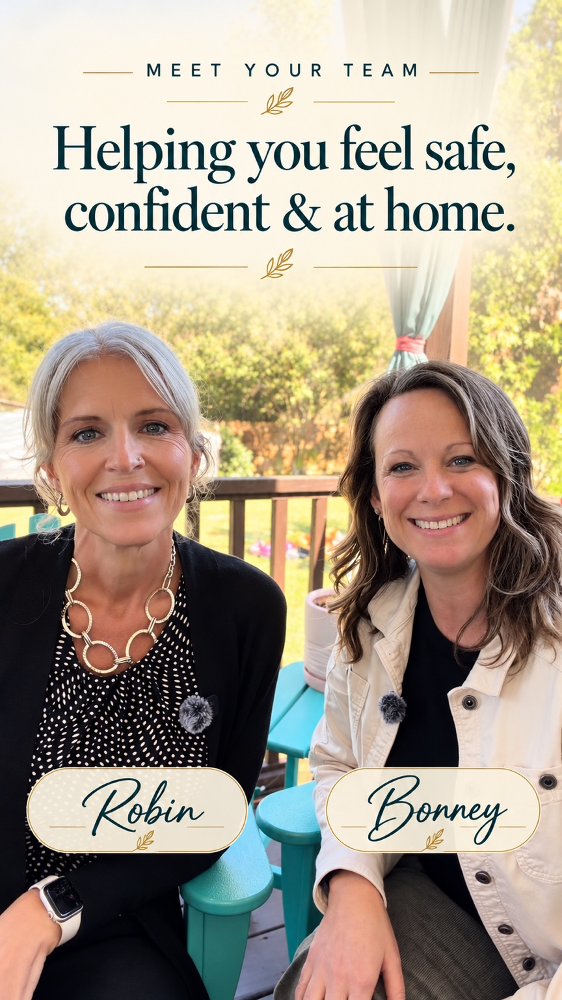
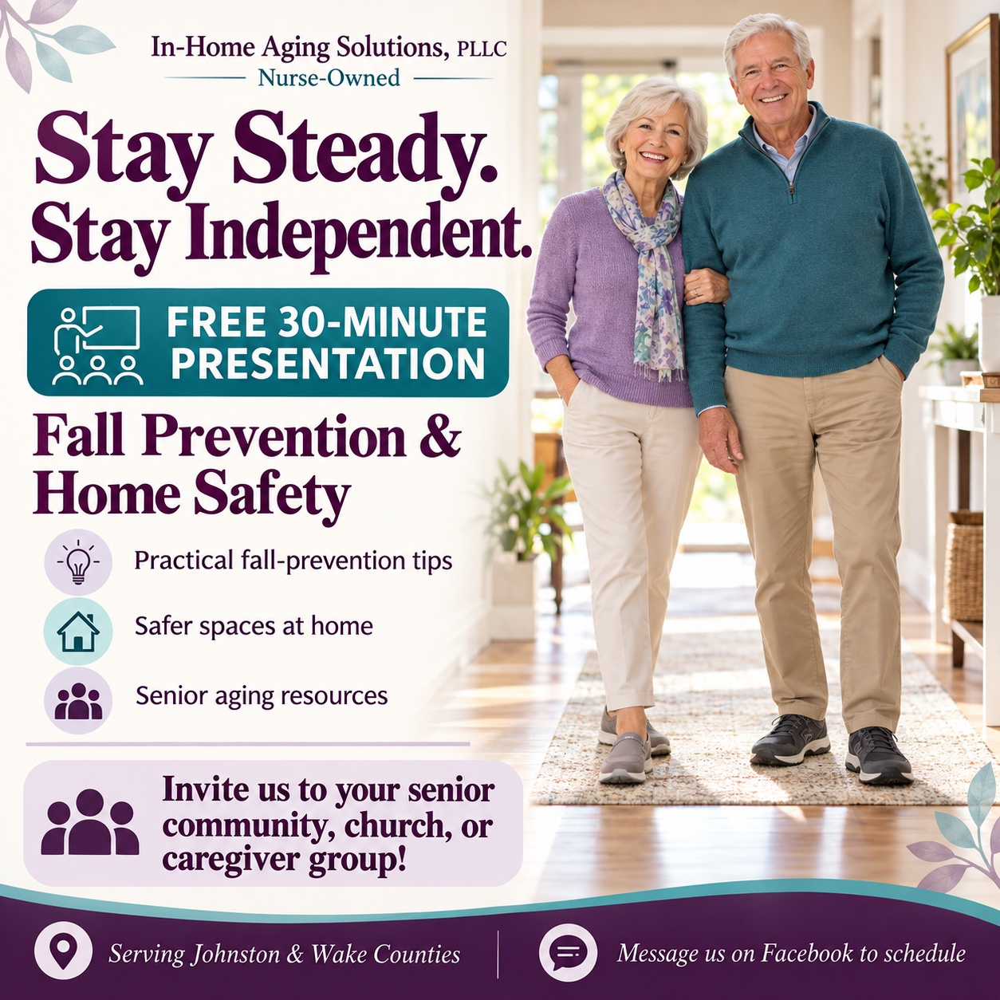

Understand the everyday.
We look at the spaces you use, how you move through them, and the concerns that matter most to you.
A little guidance. A thoughtful plan. More confidence in the place you love.
We’re Robin and Bonney, registered nurses helping older adults and their families navigate home safety and aging in place.

SUPPORT THAT STARTS WITH LISTENING
You know your home and your loved ones best. We bring a nurse’s perspective, a fresh set of eyes, and practical recommendations that respect your routines, preferences, and independence.
We look at the spaces you use, how you move through them, and the concerns that matter most to you.
Receive specific, prioritized recommendations so the next step feels manageable instead of overwhelming.
With your permission, we include family in the conversation and follow up on your assessment recommendations.
A THOUGHTFUL FIRST STEP
Our Comprehensive Home Safety Assessment brings the details together in one personal, in-home visit.
Additional spouse assessed at the same visit: $100
Prepare for a conversationWHAT’S INCLUDED
Approximately 90 minutes reviewing your home’s layout, lighting, organization, and potential safety hazards.
Observation of how you navigate your main living spaces and use your assistive devices.
A review for safety concerns, including medicines associated with falls, plus an updated medication list to share with your healthcare team.
A digital plan within three business days, with high, medium, and low priority concerns and practical recommendations.
One 60-minute in-home follow-up within 30 days to review progress and address remaining concerns.
Recommendations support risk reduction; no assessment can guarantee that a fall will not occur. Medication changes remain with your prescribing clinician.
SUPPORT THAT FITS YOUR LIFE
Our private-pay nursing concierge services bring personalized support to older adults and their families. We can tailor visits to each client’s needs, preferences, and daily routine.
MORE TIME TOGETHER
$200 / block
Extended support with time for companionship, caregiver respite, or other agreed concierge services.
No mileage charge within a 15-mile radius. Beyond that radius, mileage applies at $0.76 per mile.
ADDITIONAL CONCIERGE NURSING SERVICES
Companion and homemaker services help your loved one feel supported at home. We can tailor a plan to their needs, whether you need short-term help, ongoing support, weekdays, or weekends.
$70 / hour
$70 / hour
Companion + homemaker services: $70/hour. No minimum number of hours.
For quick services your loved one may need. No mileage charge within 15 miles. For visits outside 15 miles, mileage is added at $0.76 per mile.
Complimentary 30-minute phone consultation. Let’s discuss your loved one’s needs and create a schedule that works.
Discuss a personalized planEducation, advocacy, and support for clients and families are part of our approach.
No mileage charge within a 15-mile radius. Mileage charges apply beyond a 15-mile radius at $0.76 per mile. Travel to your home is measured from the nurse’s actual departure location; the return trip is not charged. When errand mileage applies, it covers travel from your home to the destination(s) and back. The 15-mile radius mileage policy also applies to three-hour blocks.
YOUR NEEDS COME FIRST
Let’s talk. We can tailor a plan to your needs and discuss available options and custom pricing. Services, visit length, and applicable charges are agreed before booking.
Someone’s parent or grandparent deserves the same care and attention I would want for my own.RobinCO-FOUNDER & REGISTERED NURSE
MY WHY · A NOTE FROM ROBIN
Some of my most cherished childhood memories are of time spent with my grandmothers. The bond we shared helped shape who I am and the nurse I became. Everyone has a story, and our older loved ones deserve to be heard, respected, loved, and supported in living a fulfilling life.
Now, as my own parents grow older, this work feels even more personal. I want to be their advocate—to help them navigate challenges, feel supported, and stay as safe and independent as possible. I know so many families want those same things for the people they love, and sometimes it’s hard to know where to begin.
That’s a big part of why Bonney and I started In Home Aging Solutions, PLLC. Through home safety assessments, practical recommendations, education, and support, we bring our nursing experience and compassion to families looking for a place to start.
For our families. For yours.
That’s my why. — Robin
Aging should not mean simply getting by. Our seniors deserve to continue living full, meaningful, and abundant lives.BonneyCO-FOUNDER & REGISTERED NURSE
MY WHY · A NOTE FROM BONNEY
My sister and I help care for our aging parents, so I know firsthand the challenges that come with aging—both for our loved ones and for the families supporting them.
One thing I believe wholeheartedly is that aging should not mean simply getting by. Our seniors deserve to continue living full, meaningful, and abundant lives!
That belief is at the heart of why I’m part of In Home Aging Solutions, PLLC: to help older adults and their families feel supported as they navigate this stage of life.
Full lives. Meaningful moments.
That’s my why. — Bonney
SMALL STEPS START HERE
Choose a space to explore a few simple safety ideas. These are conversation starters, not a substitute for an individual assessment.
The routes you walk most often deserve a little extra attention.
Ideas adapted from CDC STEADI’s Check for Safety.
CONNECTING WITH OUR COMMUNITY
Free 30-minute presentation
Invite Robin and Bonney to your senior community, church, or caregiver group in Johnston or Wake County for an approachable conversation about safer living at home.
Call 984-357-5770 or email inhomeagingsolutions@gmail.com to discuss scheduling a presentation for your group.
Plan your group’s conversation
GETTING TO KNOW YOUR LOVED ONE
Thoughtful support starts with knowing the person. Our Client Personal Profile & Preferences helps us learn about your loved one’s interests, routines, favorite activities, and what makes them feel comfortable and respected.
You or a family member can complete it together. Every question is optional.
Open or download the two-page profile to begin getting to know your loved one better and prepare for our first visit.
Open the personal profile (PDF) ↗Download a copy ↓Opening this PDF does not submit information to us. Bring your completed profile to your visit, or ask Robin or Bonney how to share it privately.
LET’S START WITH WHAT MATTERS TO YOU
You don’t need to have everything figured out. A complimentary 30-minute introductory phone conversation is a chance to talk through your concerns and learn about the assessment.
Thinking about a loved one? Start by asking what would help them feel more comfortable at home.
Choose what’s on your mind and create a short note to share with Robin or Bonney.
This creates a note on your device. It does not send an inquiry or book an appointment.
Share this note with Robin or Bonney through your usual contact channel to discuss next steps.
A FEW HELPFUL ANSWERS
Older adults who want to remain at home, and families looking for practical guidance about their loved one’s surroundings and everyday routines. Your goals and preferences guide the conversation.
No. You can explore an assessment before a fall, after noticing changes at home, or when planning ahead. We’ll discuss your concerns and help you understand the assessment.
Yes, with the older adult’s permission. We welcome the perspective of family and caregivers while keeping the client’s preferences, consent, and privacy at the center.
You receive a digital action plan within three business days. One 60-minute in-home follow-up within 30 days is included to discuss progress, questions, and remaining concerns.
Tell us what you need. Availability, service scope, visit details, pricing, and any mileage charges are discussed and agreed before services begin. Mileage charges apply beyond a 15-mile radius at $0.76 per mile; this policy also applies to three-hour blocks. The assessment is a private-pay service.
No. Home safety recommendations complement care from your healthcare team. Assessment visits do not provide continuous supervision, emergency response, or a guarantee against falls.